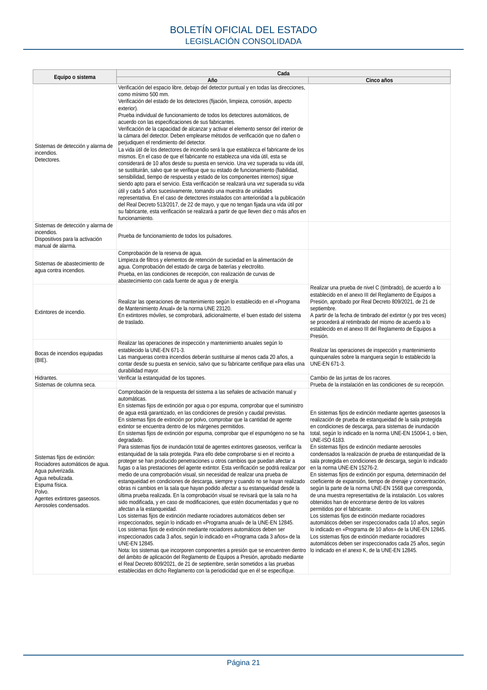
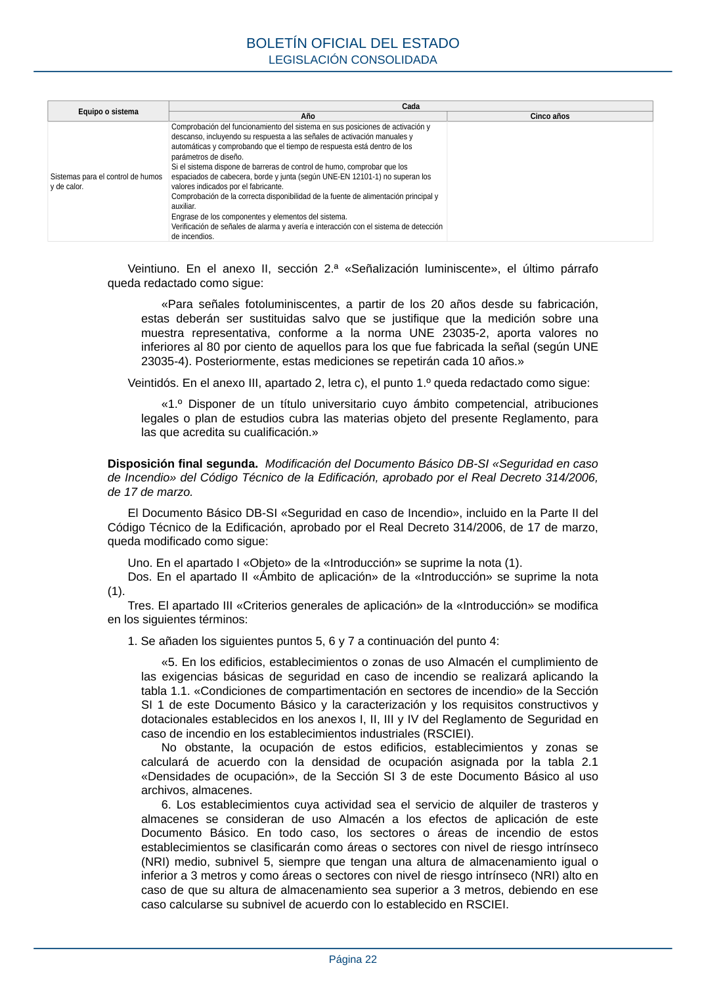

RSCIEI · Fragmento de PDF p20 · versión 2025-04-10 · capa asociada
Formatos: JSON compacto · Markdown · PDF fuente
Ámbito del documento · texto del ámbito · documento y tablas
ID técnico a0054 · PDF pág. 20-22 · jerarquía no validada por persona · no es capítulo: sin_linea_de_encabezado · padre: raíz · literal original en el contenido: «sigue:»
sigue: Equipo o sistema Cada Año Cinco años Sistemas de detección y alarma de incendios. Requisitos generales. Comprobación del funcionamiento de maniobras programadas, en función de la zona de detección. Verificación y actualización de la versión de «software» de la central, de acuerdo con las recomendaciones del fabricante. Comprobar todas las maniobras existentes: Avisadores luminosos y acústicos, paro de aire, paro de máquinas, paro de ascensores, extinción automática, compuertas cortafuego, equipos de extracción de humos y otras partes del sistema de protección contra incendios. Se deberán realizar las operaciones indicadas en la norma UNE-EN 23007-14. BOLETÍN OFICIAL DEL ESTADO LEGISLACIÓN CONSOLIDADA Página 20 Equipo o sistema Cada Año Cinco años Sistemas de detección y alarma de incendios. Detectores. Verificación del espacio libre, debajo del detector puntual y en todas las direcciones, como mínimo 500 mm. Verificación del estado de los detectores (fijación, limpieza, corrosión, aspecto exterior). Prueba individual de funcionamiento de todos los detectores automáticos, de acuerdo con las especificaciones de sus fabricantes. Verificación de la capacidad de alcanzar y activar el elemento sensor del interior de la cámara del detector. Deben emplearse métodos de verificación que no dañen o perjudiquen el rendimiento del detector. La vida útil de los detectores de incendio será la que establezca el fabricante de los mismos. En el caso de que el fabricante no establezca una vida útil, esta se considerará de 10 años desde su puesta en servicio. Una vez superada su vida útil, se sustituirán, salvo que se verifique que su estado de funcionamiento (fiabilidad, sensibilidad, tiempo de respuesta y estado de los componentes internos) sigue siendo apto para el servicio. Esta verificación se realizará una vez superada su vida útil y cada 5 años sucesivamente, tomando una muestra de unidades representativa. En el caso de detectores instalados con anterioridad a la publicación del Real Decreto 513/2017, de 22 de mayo, y que no tengan fijada una vida útil por su fabricante, esta verificación se realizará a partir de que lleven diez o más años en funcionamiento. Sistemas de detección y alarma de incendios. Dispositivos para la activación manual de alarma. Prueba de funcionamiento de todos los pulsadores. Sistemas de abastecimiento de agua contra incendios. Comprobación de la reserva de agua. Limpieza de filtros y elementos de retención de suciedad en la alimentación de agua. Comprobación del estado de carga de baterías y electrolito. Prueba, en las condiciones de recepción, con realización de curvas de abastecimiento con cada fuente de agua y de energía. Extintores de incendio. Realizar las operaciones de mantenimiento según lo establecido en el «Programa de Mantenimiento Anual» de la norma UNE 23120. En extintores móviles, se comprobará, adicionalmente, el buen estado del sistema de traslado. Realizar una prueba de nivel C (timbrado), de acuerdo a lo establecido en el anexo III del Reglamento de Equipos a Presión, aprobado por Real Decreto 809/2021, de 21 de septiembre. A partir de la fecha de timbrado del extintor (y por tres veces) se procederá al retimbrado del mismo de acuerdo a lo establecido en el anexo III del Reglamento de Equipos a Presión. Bocas de incendios equipadas (BIE). Realizar las operaciones de inspección y mantenimiento anuales según lo establecido la UNE-EN 671-3. Las mangueras contra incendios deberán sustituirse al menos cada 20 años, a contar desde su puesta en servicio, salvo que su fabricante certifique para ellas una durabilidad mayor. Realizar las operaciones de inspección y mantenimiento quinquenales sobre la manguera según lo establecido la UNE-EN 671-3. Hidrantes. Verificar la estanquidad de los tapones. Cambio de las juntas de los racores. Sistemas de columna seca. Prueba de la instalación en las condiciones de su recepción. Sistemas fijos de extinción: Rociadores automáticos de agua. Agua pulverizada. Agua nebulizada. Espuma física. Polvo. Agentes extintores gaseosos. Aerosoles condensados. Comprobación de la respuesta del sistema a las señales de activación manual y automáticas. En sistemas fijos de extinción por agua o por espuma, comprobar que el suministro de agua está garantizado, en las condiciones de presión y caudal previstas. En sistemas fijos de extinción por polvo, comprobar que la cantidad de agente extintor se encuentra dentro de los márgenes permitidos. En sistemas fijos de extinción por espuma, comprobar que el espumógeno no se ha degradado. Para sistemas fijos de inundación total de agentes extintores gaseosos, verificar la estanquidad de la sala protegida. Para ello debe comprobarse si en el recinto a proteger se han producido penetraciones u otros cambios que puedan afectar a fugas o a las prestaciones del agente extintor. Esta verificación se podrá realizar por medio de una comprobación visual, sin necesidad de realizar una prueba de estanqueidad en condiciones de descarga, siempre y cuando no se hayan realizado obras ni cambios en la sala que hayan podido afectar a su estanqueidad desde la última prueba realizada. En la comprobación visual se revisará que la sala no ha sido modificada, y en caso de modificaciones, que estén documentadas y que no afectan a la estanqueidad. Los sistemas fijos de extinción mediante rociadores automáticos deben ser inspeccionados, según lo indicado en «Programa anual» de la UNE-EN 12845. Los sistemas fijos de extinción mediante rociadores automáticos deben ser inspeccionados cada 3 años, según lo indicado en «Programa cada 3 años» de la UNE-EN 12845. Nota: los sistemas que incorporen componentes a presión que se encuentren dentro del ámbito de aplicación del Reglamento de Equipos a Presión, aprobado mediante el Real Decreto 809/2021, de 21 de septiembre, serán sometidos a las pruebas establecidas en dicho Reglamento con la periodicidad que en él se especifique. En sistemas fijos de extinción mediante agentes gaseosos la realización de prueba de estanqueidad de la sala protegida en condiciones de descarga, para sistemas de inundación total, según lo indicado en la norma UNE-EN 15004-1, o bien, UNE-ISO 6183. En sistemas fijos de extinción mediante aerosoles condensados la realización de prueba de estanqueidad de la sala protegida en condiciones de descarga, según lo indicado en la norma UNE-EN 15276-2. En sistemas fijos de extinción por espuma, determinación del coeficiente de expansión, tiempo de drenaje y concentración, según la parte de la norma UNE-EN 1568 que corresponda, de una muestra representativa de la instalación. Los valores obtenidos han de encontrarse dentro de los valores permitidos por el fabricante. Los sistemas fijos de extinción mediante rociadores automáticos deben ser inspeccionados cada 10 años, según lo indicado en «Programa de 10 años» de la UNE-EN 12845. Los sistemas fijos de extinción mediante rociadores automáticos deben ser inspeccionados cada 25 años, según lo indicado en el anexo K, de la UNE-EN 12845. BOLETÍN OFICIAL DEL ESTADO LEGISLACIÓN CONSOLIDADA Página 21 Equipo o sistema Cada Año Cinco años Sistemas para el control de humos y de calor. Comprobación del funcionamiento del sistema en sus posiciones de activación y descanso, incluyendo su respuesta a las señales de activación manuales y automáticas y comprobando que el tiempo de respuesta está dentro de los parámetros de diseño. Si el sistema dispone de barreras de control de humo, comprobar que los espaciados de cabecera, borde y junta (según UNE-EN 12101-1) no superan los valores indicados por el fabricante. Comprobación de la correcta disponibilidad de la fuente de alimentación principal y auxiliar. Engrase de los componentes y elementos del sistema. Verificación de señales de alarma y avería e interacción con el sistema de detección de incendios. Veintiuno. En el anexo II, sección 2.ª «Señalización luminiscente», el último párrafo queda redactado como sigue: «Para señales fotoluminiscentes, a partir de los 20 años desde su fabricación, estas deberán ser sustituidas salvo que se justifique que la medición sobre una muestra representativa, conforme a la norma UNE 23035-2, aporta valores no inferiores al 80 por ciento de aquellos para los que fue fabricada la señal (según UNE 23035-4). Posteriormente, estas mediciones se repetirán cada 10 años.» Veintidós. En el anexo III, apartado 2, letra c), el punto 1.º queda redactado como sigue: «1.º Disponer de un título universitario cuyo ámbito competencial, atribuciones legales o plan de estudios cubra las materias objeto del presente Reglamento, para las que acredita su cualificación.»


PDF fuente redistribuible: copia fiel enlazada en esta página (SHA256 verificado).